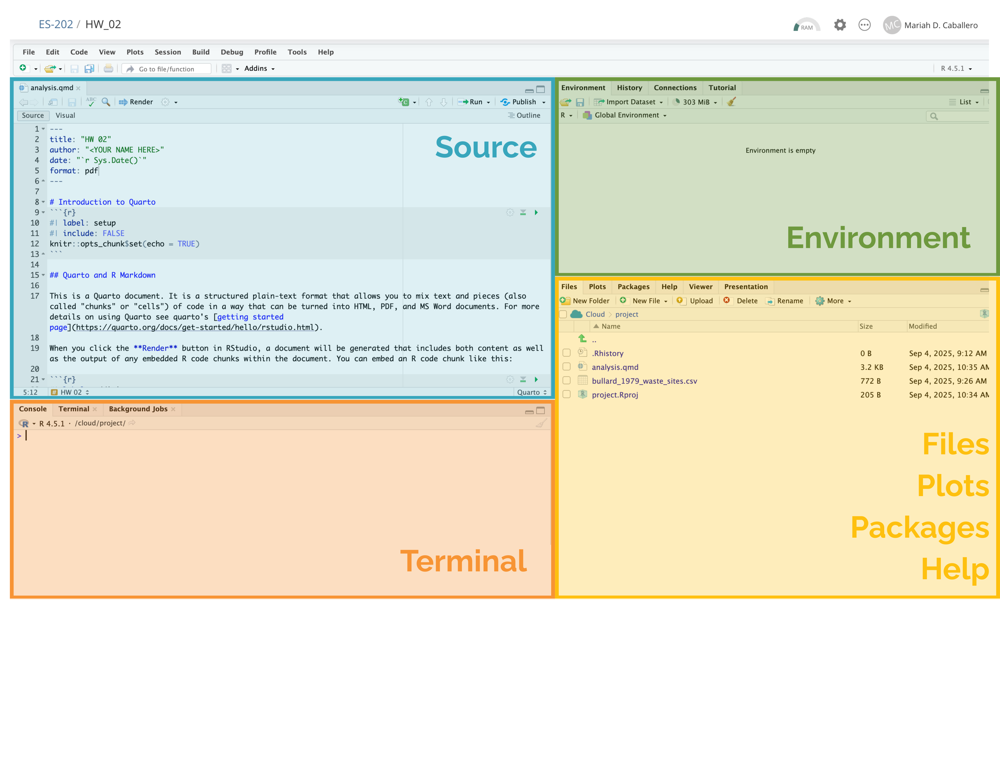

Title: Residential Decarbonization for Rural United States Communities: Opportunities for Energy Justice Description: Transitioning United States (U.S.) households to be more efficient and use renewable energy sources is a critical component of the energy transition. Residential decarbonization also provides an opportunity for energy justice, where communities that have been previously disinvested in can be prioritized– promoting healthier homes and more affordable energy bills. While significant research has been dedicated to decarbonizing homes in urban locations, very little research has been conducted on the challenges and opportunities for decarbonizing rural housing stock. This project will oversee three students on one interdisciplinary research project with multiple collaborators (Dr. Dan Sambor at Olin College and the Clean Energy Transition Institute in Seattle, WA) and research outcomes
Dr. Selden’s Project:
Title: Mapping Fishing Communities’ Economic and Cultural Ties to Offshore Locations to Enhance Participation in Management and Decision-making Description: The seascape is an increasingly crowded place, and effective ocean management requires an understanding of the importance of ocean areas for fisheries, conservation, marine transportation, and marine-based renewable energy. We seek to make visible the relationship of fishing communities to offshore locations to enhance their participation in ecosystem-based management and marine spatial planning. To do so, this project will integrate quantitative spatial information from a thirty-year database of vessel trip records of Northeast US fishing communities with qualitiative analysis of existing oral histories.
Term “environmental justice” was popularized in 1980s
1982: Began as a social movement
Communities of color organizing and resisting unfair siting activities (toxic waste, landfills, and oil refineries)
Protests in Warren County, NC are especially salient to origins of EJ
1987: United Church of Christ (UCC) Commission for Racial Justice published report on Black and Latine exposure to toxic sites.
1991: UCC hosted the First National People of Color Environmental Leadership Summit, where the 17 Principles of Environmental Justice were created.
LaBalme, 1982
17 Principles of EJ
Include principles such as:
Sustainable use of resources
Public policy
Toxic hazard protection
Right to participation
Human rights
Military occupation
Education
Individual choices
NRDC, 1991
17 Principles Excerpt
POC Env. Leadership Summit, 1991
EJ as Policy
1994: EO 12898 passed by Clinton Administration
Requires federal agencies to integrate EJ initiatives into their work
2021: EO 14008 passed by Biden Administration
Justice40
CEJST
2022: Inflation Reduction Act
Defines environmental justice and has several EJ-related measures + incentives
2023: EO 14096 passed by Biden Administration
Calls for whole-government approach to EJ
2025: Massive repeal by Trump Administration
EO 14173 revokes EO 12898
EO 14148 revokes EOs 14008 + 14096
NRDC, 2014
17 Principles of EJ + Tenet-Based Approach
17 Principles are still highly regarded
Today, a lot of academic conversations around what EJ means to whom, and how to classify it.
I chose a five tenet approach (currently used a lot in Energy Justice scholarship), because it provides a nice framework for theorizing different aspects of justice, while still staying true to the EJ imaginaries of POC Env. Leadership summit
Tenet-Based Approach
Defining and Implementing EJ?
What are the strengths and challenges associated with a principles versus a tenet approach?
How might the ongoing evolution of EJ as a social movement, policy, and academic conversation make implementation tricky?
Intro to R
Checking R Installation
Was everyone able to install RStudio on their device?
File Management
File management is a critical component of coding.
Important to start off on the right foot!
This is my suggested file structure.
Integrated Development Environment

Installing Packages
Packages are comprised of functions, data, and additional documentation to load, clean, and analyze your data.
You only need to install packages once, so do so in your console
Installing a package needs only one line of code:
We’ll also need to make a one-time change by running an install function.